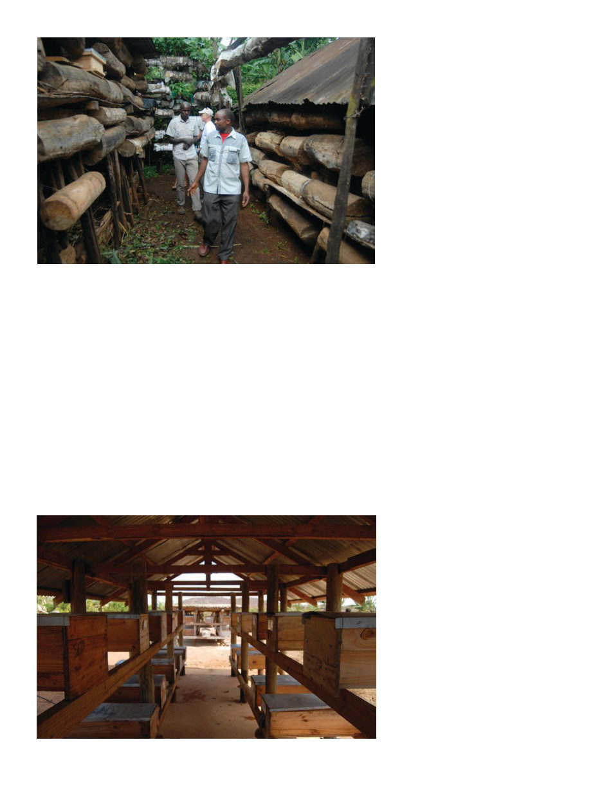

American Bee Journal
96
To be fair I wasn’t encouraged by the
advice the night before that “the po-
lice aren’t safe outside at night here,
neither are you,” or the fact that ev-
ery day there were more Boko Haram
terrorist attacks in the country. Barely
had I sat there more than twenty min-
utes, however, when Washington bee-
keeper Doug Johnson came down into
the lobby and told me excitedly about
his recent adventures in the Danakil
badlands of Ethiopia.
“Hey, want to go walk around
town?” he asked me. Feeling chas-
tised, I ventured outside with him.
November 11, 2014 — “The next
speakers will be representatives of the
Hadzabe people,” the translation in
my headphones informs me in its tin-
ny, disinterested voice. It’s been two
years and six projects since I first set
foot in Africa, and I’m sitting between
Doug Johnson and Stephen Peterson
in the tiered seating of the Arusha In-
ternational Conference Center, in Tan-
zania, for the Apimondia Africa Sym-
posium 2014. The conference center
has a state-of-the-art United Nations
look inherited from its days as the
U.N. Criminal Tribunal for Rwanda.
The audience sits in a circle of tiered
seating around a podium and mod-
erator’s dais. Reflective windows
overlooking the scene from the walls
house translators providing instant
translation in a number of languages.
I see the next speakers hobbling
down the aisle beside us. They’re
wearing ill-fitting business suits over
traditional necklaces and bracelets, as
if someone put suit jackets on a few
men who were utterly unfamiliar
with the garb. One has a pronounced
limp, it’s unclear if the others are just
keeping pace with him or they’re all
hobbling. They cautiously shuffle
down the gentle aisle steps to the
center of the room and get behind
the podium. They gaze around like
the entire building is fascinating and
scary. Their leader, the one with the
limp, speaks into the microphone in
their native language. By the time the
translation comes through the head-
phones they’re already finished and
are making their way back toward
the aisle.
“Please, help us. We’re very impov-
erished. We need help. Please help us.”
Doug and I look at each other. What
was that about?
That evening, on the balcony of
Mount Meru Hotel at the other end of
Arusha, glasses clink around me and
servers glide through the crowd with
platters of hors d’oeuvres. Some at-
tendees are dressed elegantly in fine
suits or gowns, some of us are wear-
ing our best safari-formal, having not
quite anticipated a soiree hosted by
Prime Minister of Tanzania Mizengo
Pinda (a beekeeper, it turns out).
The hotel is a modern high-rise, the
city is mostly dark and somnolent
below us. The warm night air feels
pleasant.
“You see,” Krysten Ericson of Maa-
sai Honey is telling me, “the Hadzabe
are hunter-gatherers. For thousands
of years they’ve moved from place
to place throughout the year. But
now they leave a place and some-
one builds a resort there. They leave
another place and someone builds a
ranch there before they come back,
so as they keep moving, all the best
places get taken. It’s a losing game of
musical chairs and now they’re in the
most inhospitable scrubland.”
“Oh” I say, remembering the
speakers.
“So they need to learn new ways
to support themselves. My friend
Dr. Kone — he’s the Regional Com-
missioner — has given them three
hundred hives but they don’t know
anything about beekeeping, we need
someone to go teach them.”
“Oh wow, that sounds interesting,”
I say, intrigued. “I would love to do
it, I’ll see if any of the organizations I
work with are interested.” She hands
me her card.
During the conference technical
The Prime Minister’s very orderly hives
Hundreds of stingless bee hives in close proximity on the slopes of Kiliminjaro. Also
my Washington beekeeper friend Doug Johnson.